Running Simulation & Viewing Results
These guides provide a handy reference to the features of the applications that are installed with OpenStudio.
Weather File and Design Days
Add weather files in the OpenStudio application under the Site tab (first vertical tab) on the left and the "Weather File & Design Days" sub-tab across the top. You can download weather files on the EnergyPlus site.
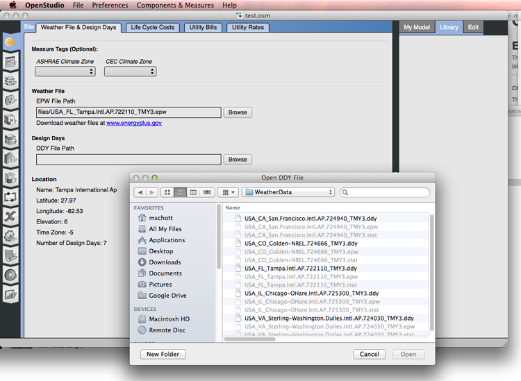
Above: Screenshot of browsing for design day file.
Requesting Output Variables
To select an output variable turn the toggle button to show a blue on. Then set the detail level you want from the drop down menu.
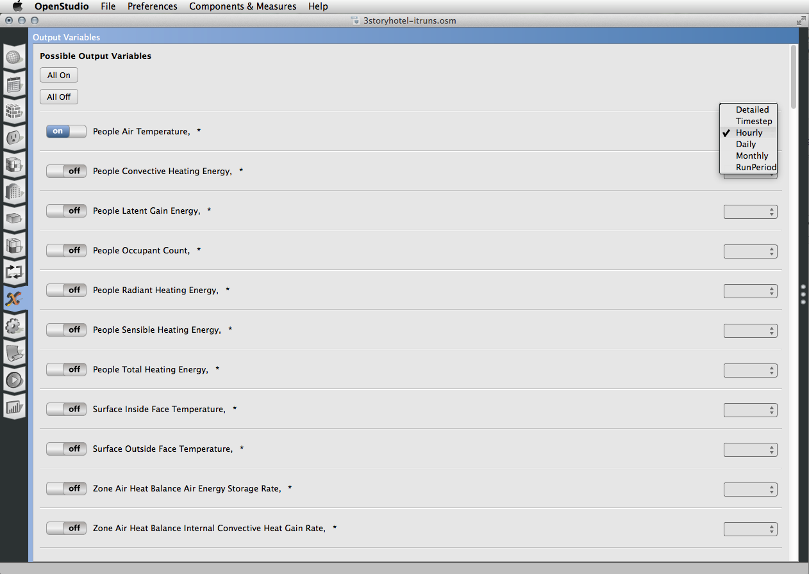
Above: Screenshot of selecting output variables.
You can also choose variables to collect data on by using the "Add Output Variable" measure under the reporting measure category.
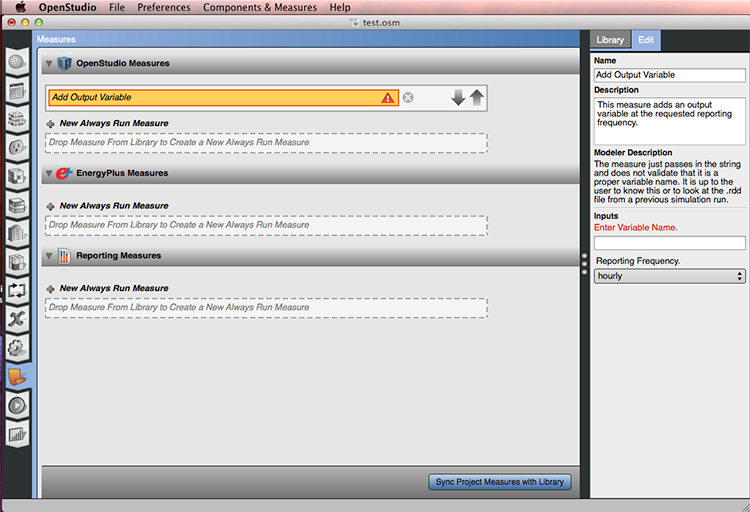
Above: Screenshot of the variable measure being added to a project. Just type in the variable you want to collect in the edit panel.
Running a Simulation
To run your simulation hit the green run button. Select the daylighting engine you want to use, EnergyPlus or Radiance. To use Radiance your file must be set up correctly. You will get a warning dialog if your file is not able to use Radiance.
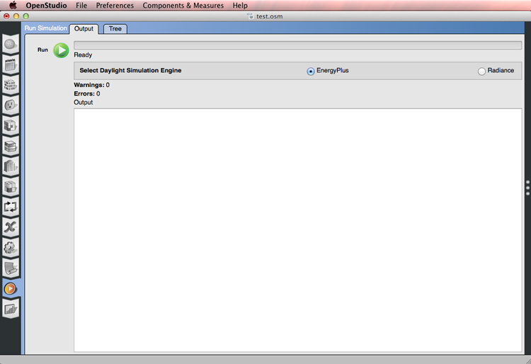
Above: Hit the run button to start running your simulation.
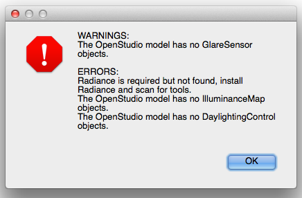
Above: If you select Radiance you must have the required objects in your model.
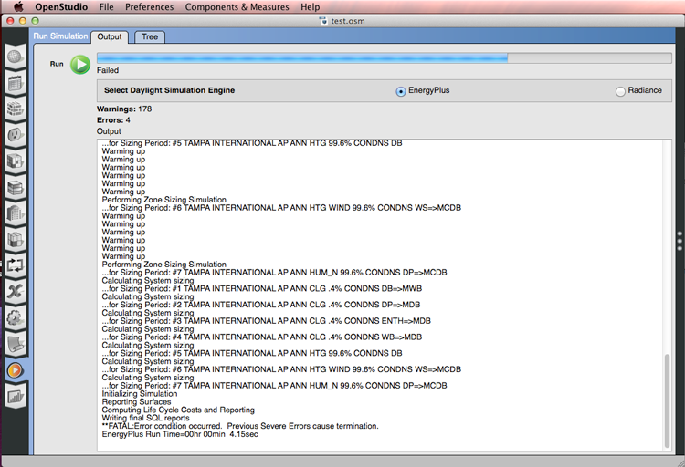
Above: The output area displays the status of the run.
Looking at Results
Standard OpenStudio results are provided with your run. If you add in utility bills you can also view a calibration report.
You can also use measures to add additional reports. You can also write your own measures to create custom reports. Add reporting measures on the OpenStudio Measures or Scripts tab.
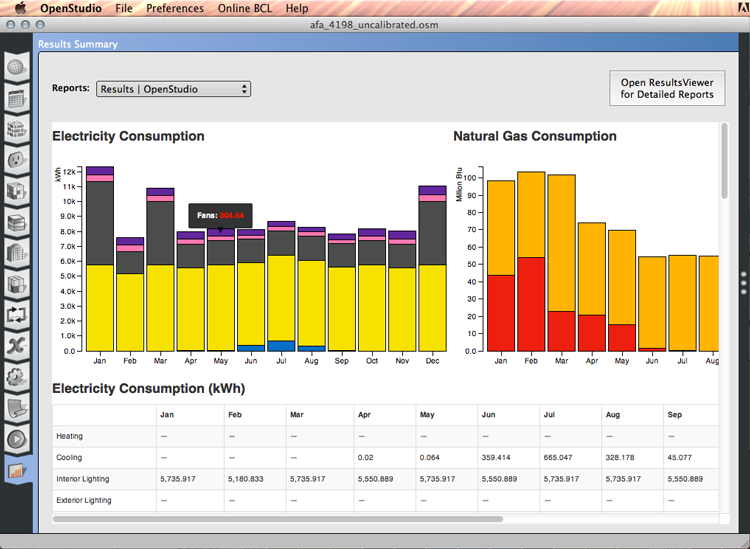
Above: This screenshot shows and example of the standard OpenStudio results.

Above: The calibration report compares utility bills with the model.
Using ResultsViewer
ResultsViewer displays EnergyPlus output in formats that are more useful than those available directly from the EnergyPlus engine. This application was originally developed to support the needs of researchers at the National Renewable Energy Laboratory, who frequently use detailed EnergyPlus outputs to understand the intricacies of building systems.
ResultsViewer displays time series results, which are produced from EnergyPlus report variable requests. ResultsViewer reads the SQLite database output of the EnergyPlus engine and presents the time series data in line and two-dimensional flood plots. It also displays the html output of EnergyPlus in an internal browser window. ResultsViewer is still an immature product; it will be refined further and results viewing capabilities will be added.
Quick Start
-
Request SQLite database output from EnergyPlus (EnergyPlus version 5.0.0 or newer must be used). Include one of the following lines in the IDF file:
Output:SQLite, Simple; or Output:SQLite, SimpleAndTabular;
-
Choose either Simple or SimpleAndTabular. (ResultsViewer does not use tabular data.) Once the database output is requested, all report variable and meter requests will be output to the database. These can be viewed in ResultsViewer.
- Click
File->Openand browse to an eplusout.sql file in the EnergyPlus output folder. ResultsViewer is packaged with an example file that can be used to explore the software's capabilities; running EnergyPlus is not necessary. - Examine output variables on either of two main views, table view or tree view, on the left.
- To plot an item, right click for a context menu or double click for a line plot.
- Drag items from each view onto a plot. In a line plot, the data will be added as an additional curve. In a flood plot, the data will be replaced with the dragged item.
Opening an EnergyPlus Output File
-
Run ResultsViewer on Windows by clicking on
Start->Programs->OpenStudio->ResultsViewerand on the Mac by going toApplications/OpenStudio/ResultsViewer.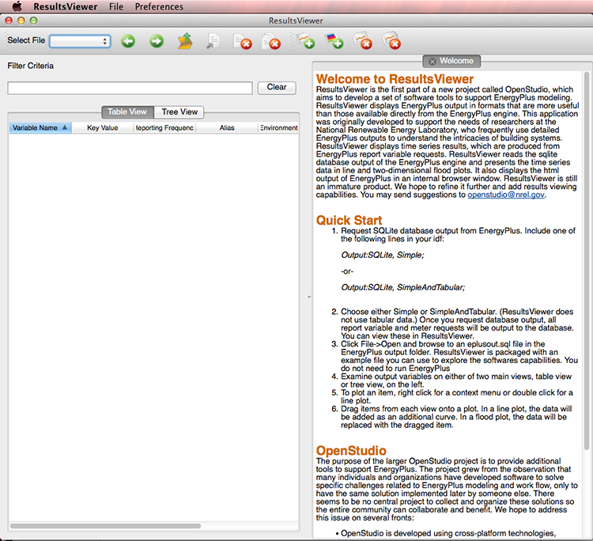
-
Click
File->Openand browse to your project folder -
Select the "eplusout.sql" file and click "Open"
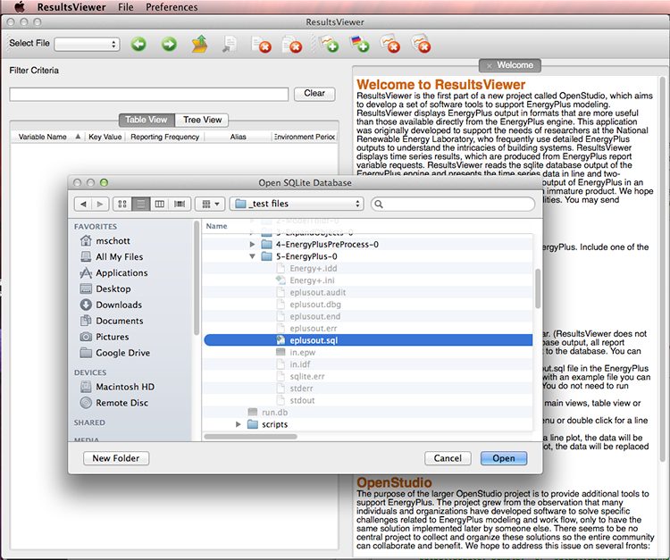
ResultsViewer provides two views, "Table View" and "Tree View", on the left hand side for navigating through the output file. A report summary for the output file is provided on the right side "eplustbl.htm"

Generate a Line Plot
To generate a line plot from the table view, simply double-click on a row. In the tree view, open the categories and click on the name of the item you want to plot.
For example, double-clicking the first row in the table view generates the Electricity:Facility line plot.
The tree view is used to view the EnergyPlus results in a hierarchical format. The hierarchy is based on the environmental period, the timestep, the variable name and the key name (when available). The tree view supports multiple selections using the "Ctrl" or "Command" and "Shift" keys with the mouse. The context menu provides the same functionality as the table view.
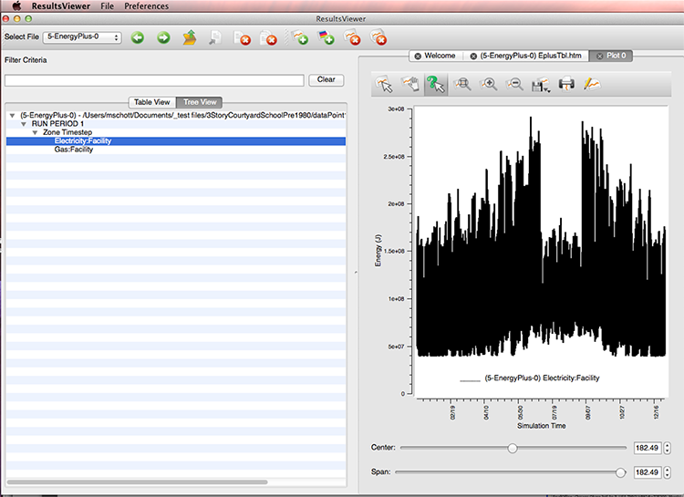
Using the Plot Toolbar
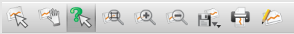
- The "Select mode" tool () is used to select the legend and move it. Sometimes the legend is behind plot lines and with this tool you can place the legend in a better place.
- The "Pan mode" tool () is used to drag the plot within the plot window. To pan a plot, click the pan mode tool and then click and drag the plot to the desired location. Clicking the "Zoom Out" tool (
 ) repeatedly resets the plot to the original position.
) repeatedly resets the plot to the original position. -
The "Value Info mode" tool () is used to show a value on a line in the plot. To display the value of a point on a curve, click on the value info mode tool and then locate the cursor near the point of interest and then click the mouse. The information in the box can be copied to other applications by selecting the desired text and ctrl+c or right mouse click in the box.
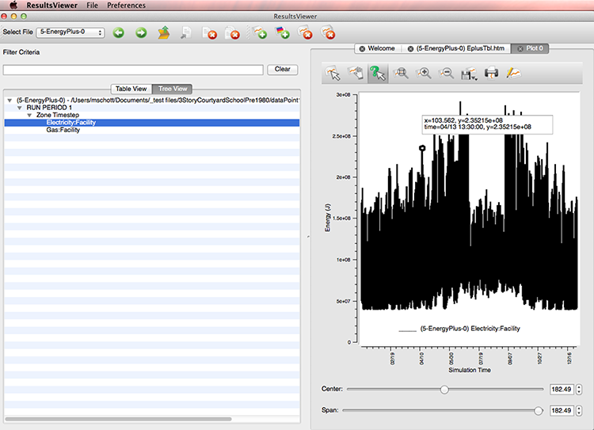
-
The "Rubber-band zoom mode" tool () is used to zoom in on the plot. To zoom in on a particular area of interest, click on the zoom mode tool and then click within the plot near the place of interest and hold the mouse button down and drag the green rectangle to enclose the desired area and then release the mouse button.
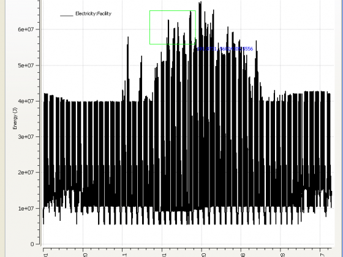
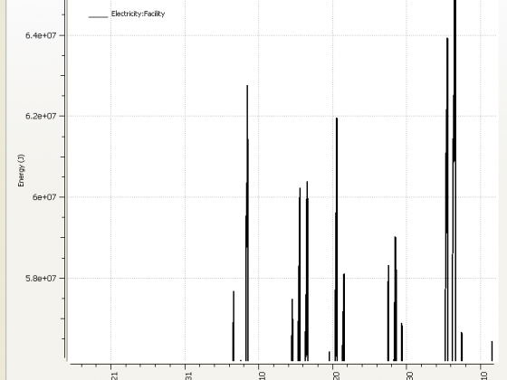
-
The "Zoom In" tool (
 ) and the "Zoom Out" tool () are used to zoom in or out of the plot view.
) and the "Zoom Out" tool () are used to zoom in or out of the plot view. -
The "Save Image" tool () is used to save the plot to disk as an image file. Currently supported formats are JPEG, PNG and BMP. Currently supported resolutions are the current image size, 800x600, 400x300. To save a plot to an image file, click the save image tool and then select the desired resolution and then select the desired file locations and format.
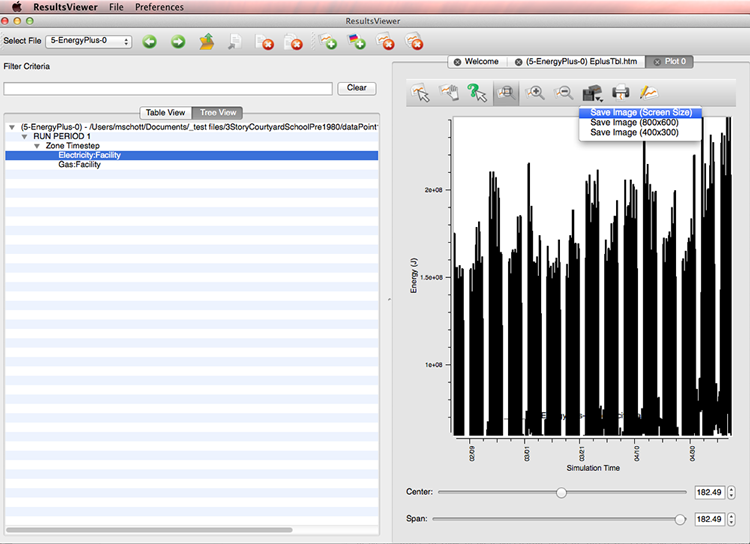
-
The "Print" tool () is used to print the plot. Selecting the print tool brings up a print dialog which is used to select the desired system printer.
-
The "Properties" tool () is used to change characteristics of the plot. Selecting the properties tool brings up a dialog which is used to change plot title, axes titles, legend display, curve styles and to remove curves from the plot.
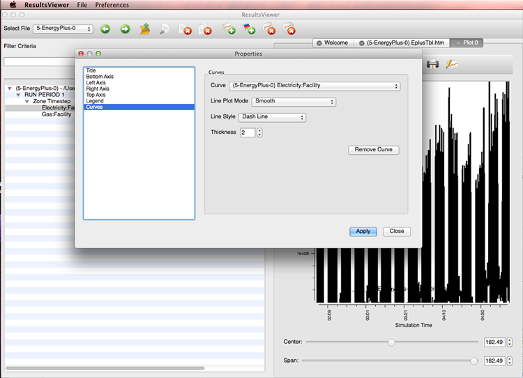
Using the Plot Center and Span Controls
The plot window contains "Center" and "Span" controls near the bottom of the window. These controls are used to move along the horizontal axis of the plot. The "Center" control specifies the horizontal center that is displayed in the plot window. The "Span" control specifies the interval on each side of the "Center" that is displayed in the plot window. The values displayed are in fractional simulation days.
For example, to display simulation days 3 through 5 in the example line plot:
- Set the "Center" to simulation day 4 using either the slider or spin box arrows or entering 4 into the spin box.
- Set the "Span" to one simulation day using either the slider or spin box arrows or entering 1 into the spin box.
The data is displayed from simulation day 3 through simulation day 5:
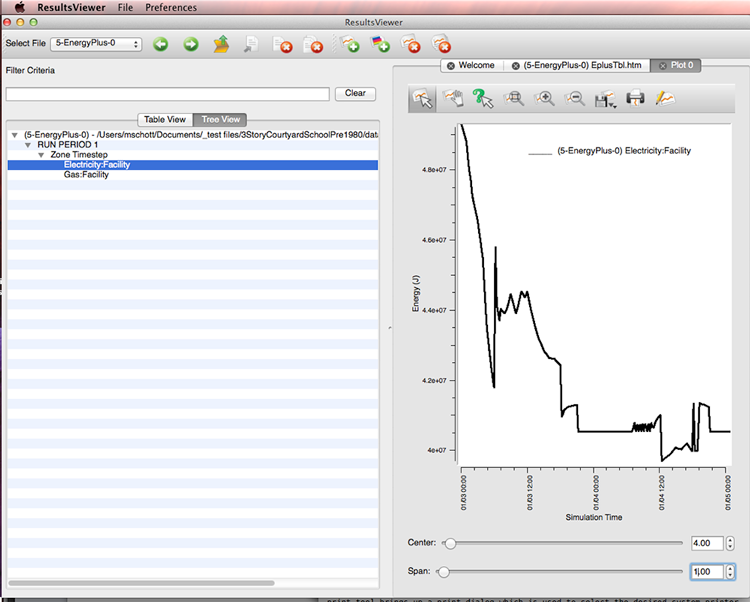
The data can now be viewed two simulation days at a time by sliding the "Center" slider with the mouse:
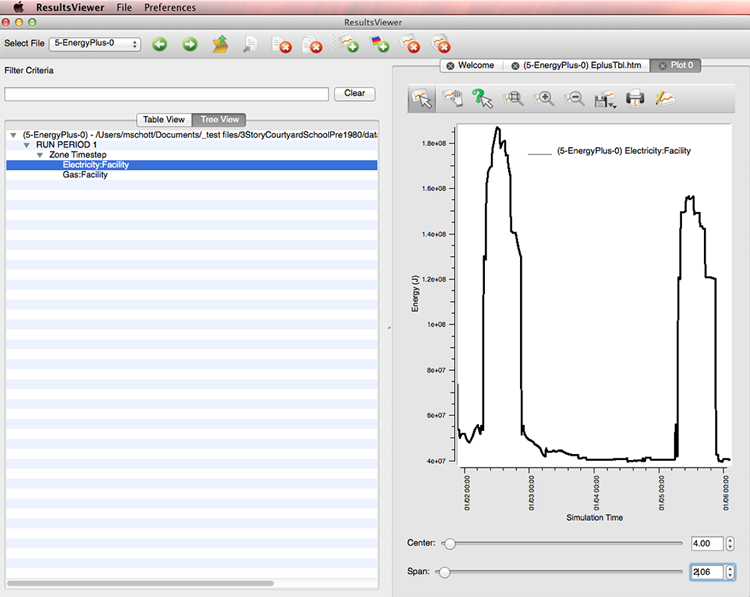
Generate Multiple Lines on a Single Plot
To generate a line plot with multiple curves, use the mouse with the "Shift" and "Ctrl" keys to select the desired rows in the table view. Holding the "Ctrl" key down on Windows and "Command" on the Mac and clicking a selected row will deselect the item. Select the "Line Plot" from the context menu. In the tree view, find the names of the items you want to plot on the tree and select then holding down the "Command" or "Ctrl" key.
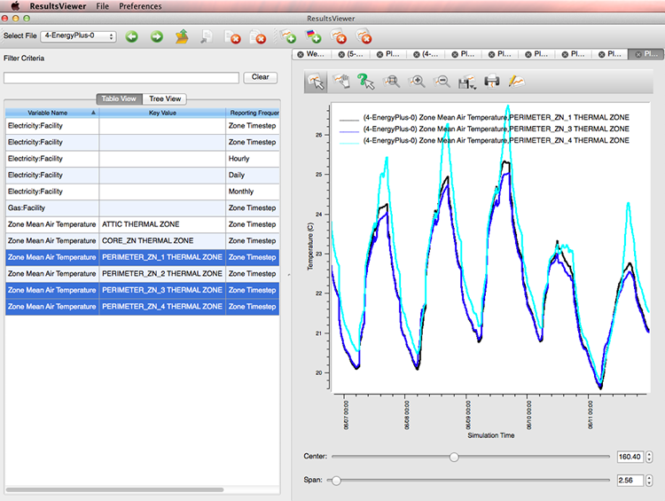
Above: Screenshot showing selected multiple lines in table view.
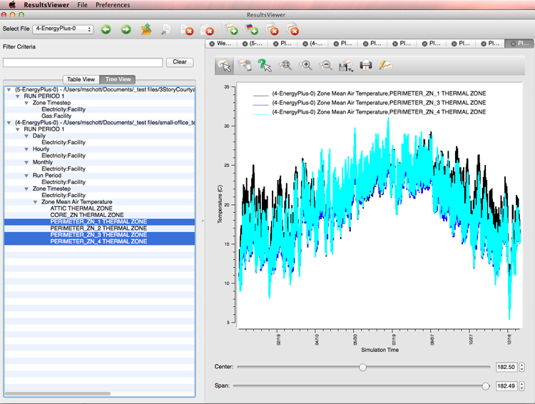
Above: Screenshot showing selected multiple lines in tree view.
Generate a Difference Plot
Difference plots are obtained by selecting two rows in the table view. The context menu is then used to plot the difference of the two selections.
Select the two items you want to plot and then right click one of the rows to view a context menu. Choose from the list to get the desired difference line plot.
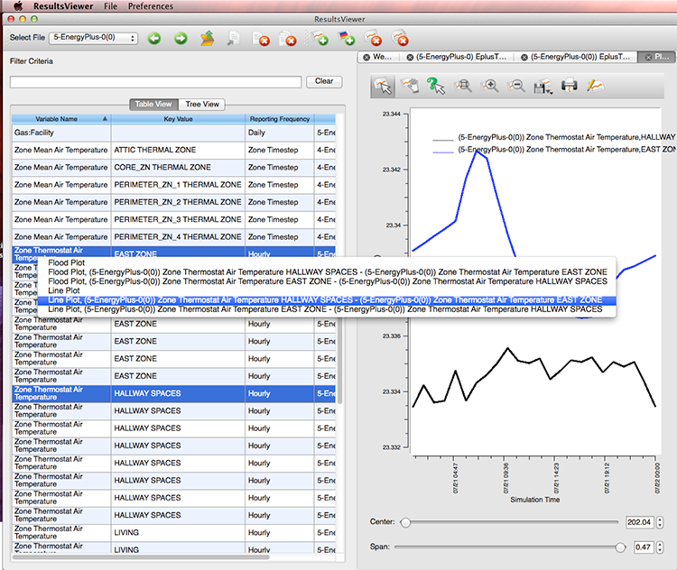
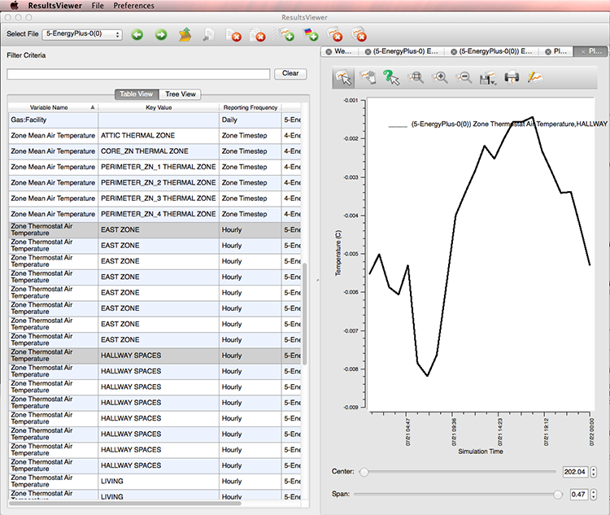
Using the Table View to Generate a Flood Plot
Flood plots are used to present data as a color map or contour map. The bottom axis displays days and the left axis displays hours within the day. Flood plots are most interesting for Hourly, Zone Timestep and HVAC System Timestep data.
For example, a flood plot of the hourly Electricity:Facility data is generated as follows:
Right mouse click on the Electricity:Facility row in the table view, and select "Flood Plot" from the context menu.
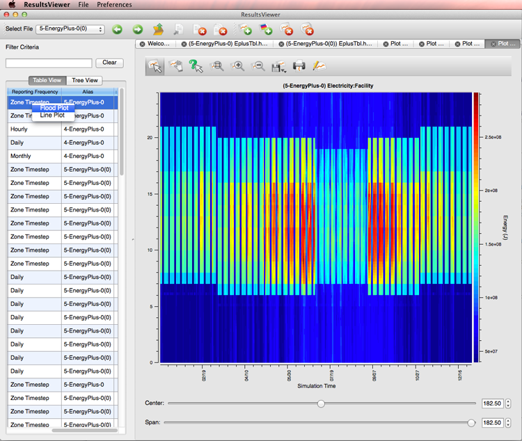
To create a flood plot from the tree view, select the item you want to plot and hit the "Flood Plot" button on the toolbar.

Filtering the Views
Filtering is limiting the items that appear in the views by specifying criteria that the displayed fields must match. Filtering applies to both the table view and the tree view. Any data that matches the value entered in the "Filter Criteria" is displayed. If data in any column matches the "Filter Criteria", then the row is displayed in the table view. If data in any node along a branch matches the "Filter Criteria", then the entire branch is displayed in the tree view. The "Filter Criteria" is evaluated as a regular expression. Currently, no phrases and no boolean operators (AND, OR, etc.) are supported.
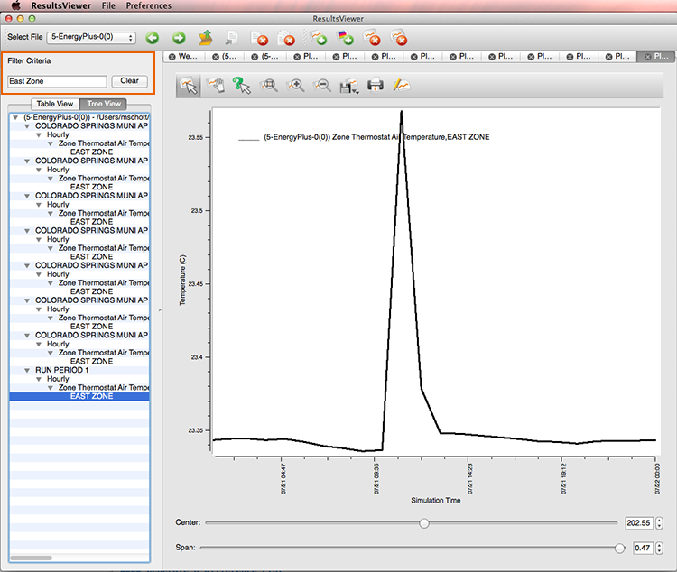
Regular expressions are supported in the "Filter Criteria". For example, to display all data that has a field beginning with "N":
- Enter "^N.*" in the "Filter Criteria" box above the tree view.
- Click the "Apply" button.
Using the Tree View to Generate an Illuminance Map
Illuminance maps are used to show daylight intensity in a given region.
To generate an illuminance map using the tree view:
- Open a SQLite file that contains daylighting analysis
- Switch to the tree view tab and scroll down to the "Illuminance Map" section under the "Hourly" time step and right mouse click
- Click on the "Illuminance Map" menu item on the context menu to generate a plot like the one below.
Note that double clicking on the "PERIMETER_ZN_1" under the "Illuminance Map" node is the same as clicking on the "Illuminance Map" menu item in the context menu.
If time series and illuminance map items are selected, no plotting occurs and the following warning message is shown:

Using the Table View to Generate an Illuminance Map Difference Plot
Illuminance maps differences can be used to look at intensity differences between zones.
To generate an illuminance map difference using the table view:
- Enter "Illuminance Map" in the "Filter Criteria" section and click the "Apply" button to get the list of Illuminance Maps for the file.
- Hold down the Ctrl and click on the items in table and then right mouse click on one of the selections for the following context menu.
- Then select your desired difference plot.